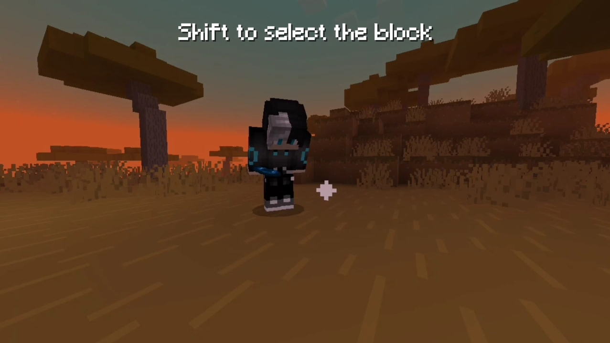
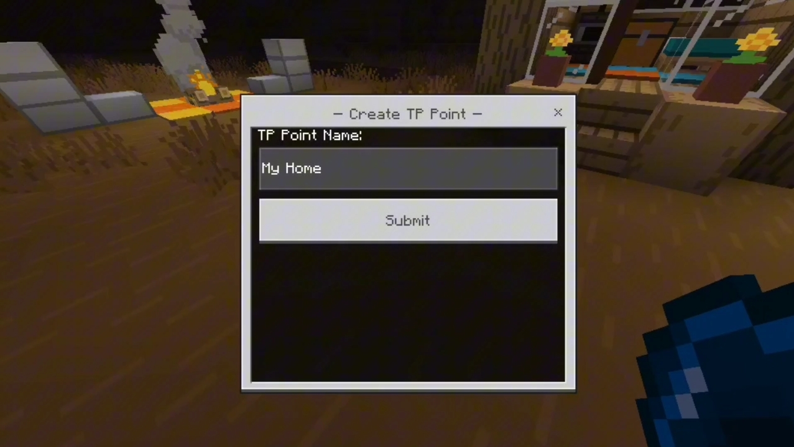
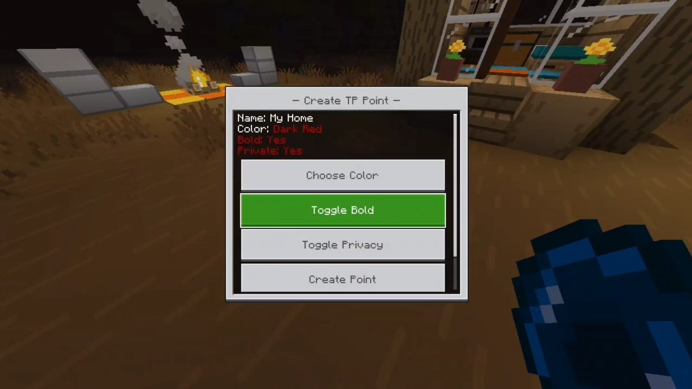
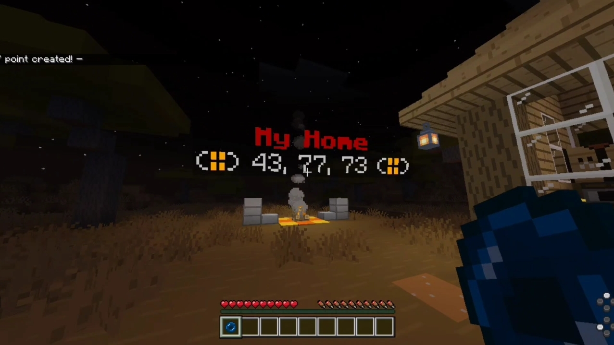

Add-ON Features
- Save multiple teleport points
- Simple and intuitive interface
- Define Your Own Safe Spot Anywhere In The World Using The Points Item.
- Perfect for Multiplayer adventure and survival gameplay
How To Use
Create Points Item

To craft Points item you will need 2x block of dirts, 1x wooden stick
Create Point

Right Click to save the location of your point

Right click to open the menu then select create point then Menu will have a slot type in a name for your teleport point, then click "Submit"

After customizing your point, click "Create Point" to save it.

After that the name of your point & coordinates will be shown on block you selected.
Installation
WINDOWS 10/11:
1. DOWNLOAD THE .MCPACK FILE.
2. DOUBLE-CLICK TO IMPORT.
3. ENABLE THE "BETA APIS" EXPERIMENT.
4. ACTIVATE BEHAVIOR PACK.
ANDROID / IOS (MCPE):
1. DOWNLOAD FILE.
2. OPEN WITH MINECRAFT.
3. GO TO WORLD SETTINGS > EXPERIMENTS.
4. YOU MUST ENABLE "BETA APIS"!